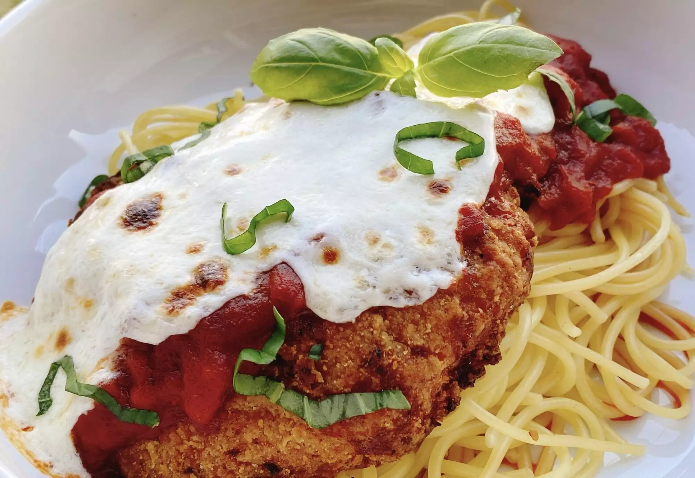

Chicken Parmesan

Description:
This chicken Parmesan starts out with frozen breaded chicken fillets. It only takes a handful of ingredients and dinner is ready in less than 30 minutes.
Ingredients
- 1 (8 ounce) package spaghetti
- ½ tablespoon salt
- 2 fully cooked breaded chicken fillets
- ½ (8 ounce) can marinara sauce
- 1 (8 ounce) package fresh mozzarella cheese, sliced
- 1 tablespoon fresh basil, cut in very thin strips
Steps
- Preheat an air fryer to 400 degrees F (200 degrees C) for 5 minutes.
- Bring a large pot of lightly salted water to a boil. Cook spaghetti in the boiling water, stirring occasionally, until tender yet firm to the bite, about 12 minutes.
- Meanwhile, set 2 chicken fillets into the air fryer basket.
- Air fry chicken fillets for 6 minutes. Flip fillets over and cook for 6 minutes on the other side. Spread marinara sauce over fillets. Top each fillet with mozzarella slices. Air fry until cheese is melted, about 3 more minutes.
- Drain spaghetti noodles and divide noodles between 2 bowls. Carefully add a chicken fillet to each bowl. Garnish with basil.